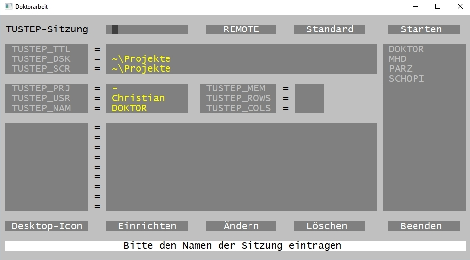
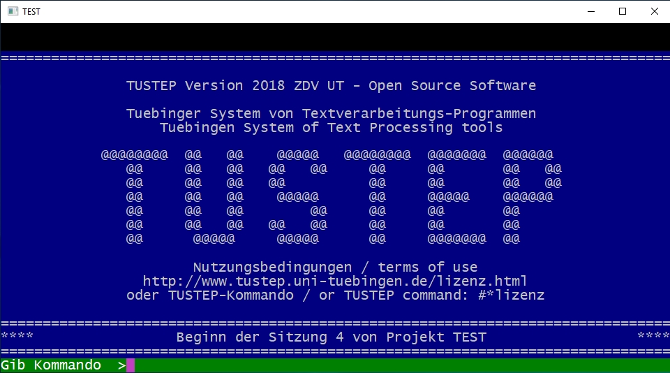
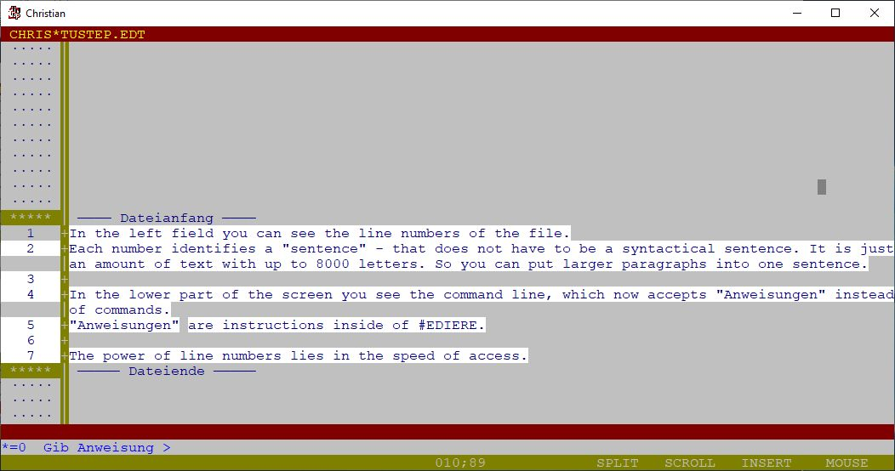
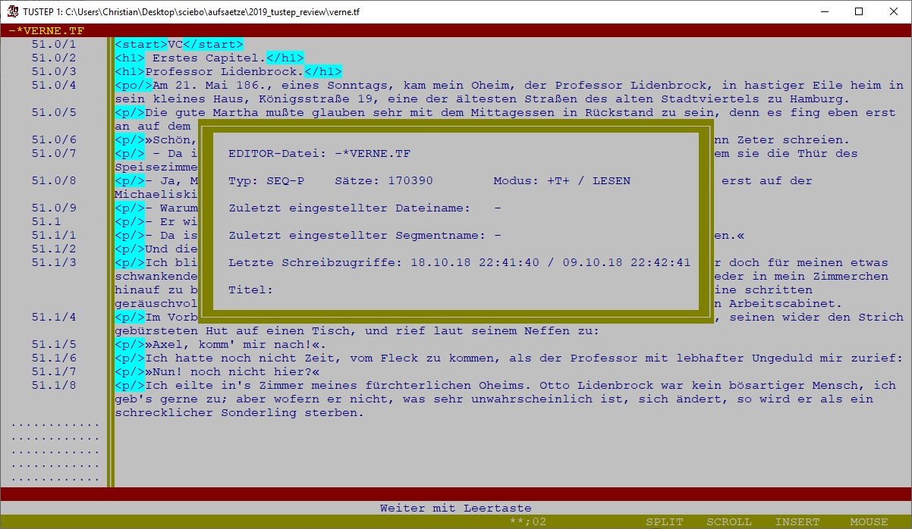

Tustep. Review of the Tübinger System von Textverarbeitungs-Programmen
Table of Contents
Abstract
This review deals with the Tübinger System von Textverarbeitungs-Programmen called TUSTEP. It describes some of the principal functions of TUSTEP, outlines sample use cases and shows benefits and downsides. While TUSTEP is one of the oldest and long-lasting applications in the area of text processing, its flexibility and functional scope make it worth to consider for present and future scientific projects dealing with text edition, manipulation and publishing.
General introduction
TUSTEP is a software toolbox or environment designed for the Digital Humanities. It has been under constant development since 1966, bearing the name of TUSTEP since 1978. It was located at the Zentrum für Datenverarbeitung (ZDV) of the University of Tübingen until 2003 and is since then the responsibility of the International TUSTEP User Group (ITUG).1
The program authors, Wilhelm Ott and Kuno Schälkle, still update and develop the program, issuing a new version approximately each year. TUSTEP 2018 is the latest stable version for production at the moment.
This version and older versions may be downloaded, installed and used for free. They are compatible with Windows, Linux and Mac operating systems and I found the installation to be straightforward.2 This review is based upon the Windows version.3 On Windows, it is sufficient to open the installation file and choose a folder for installation. It is recommended to additionally install GhostScript and/or GhostView4 because Windows and TUSTEP do not have a native support for Postscript-files (.ps) and these are mandatory when it comes to typesetting. For MAC and Linux, this step is usually not necessary.
While TUSTEP is normally installed on a personal computer, it is also possible to run it on a Linux Server and there have even been successful experiments to run the software on Raspberry Pis.5 The whole source code is provided in open access and may be modified and compiled under a BSD-license.
Being a software toolbox, TUSTEP does not have a single purpose, functionality or area of application ‒ except that it is designed to work with texts. As will be explained in more detail in the next section, TUSTEP consists of a variety of modules, each of which being designed for its specific task. Those modules can be combined almost freely by the user to create very complex workflows, so that the program suits the users’ individual needs. With regard to digital scholarly editions, TUSTEP supports all steps of a typical editorial workflow: From transcription to collation, from the constitution of critical texts with up to nine apparatus levels to the creation of indices and concordances, from professional typesetting to converting a text into any desired plain text file format.
What is TUSTEP capable of
As said above, TUSTEP consists of individual modules also referred to
as commands. There are currently 54 commands in TUSTEP. Each has a German and an
alternative English alias that consists of a leading "#", the command name and a
variable number of parameters. For example, there is a command for copying the
contents of one file into another. The name of this command is
#KOPIERE (or #COPY in English). As shown below, it
has a few comma separated parameters: "quelle" (source) and "ziel" (destination)
ask for filenames, "modus" (mode) and "loeschen" (delete) ask in a short
notation ("+" for yes, "-" for no) whether the line numbers of the file should
be recounted or the destination file overwritten:
The order of the parameters can be altered if one wishes to, but
there is a standard order. TUSTEP comes with a command-line based user interface
which is described in more detail below. The user tells TUSTEP the commands to
be executed by typing them into the command line. In order to save a lot of
typing, any command may be abbreviated after the second letter at the latest and
all parameters names may be omitted if the standard order is observed. The above
command may also look like this:
Both notations do the same thing: Copy the contents of "file_a" into "file_b", recount the line numbers and overwrite the former contents of "file_b". It is possible to combine the short hand notation with the full notation.
One benefit of TUSTEP lies in the extensive functionality of its
commands. While copying a file, the user may simultaneously want to manipulate
the contents of that file. Let’s suppose, there is a certain XML or SGML tagset
in "file_a" that should be converted to TEI-XML. The command accepts additional
parameters (here between "*" and "*eof" ‒ eof standing for "end of file"):
The parameter "XX" exchanges strings with other strings. It also
accepts string patterns, so it is possible to compress these two lines of
parameters into one by making the backslash optional.6 But this is not the only
possible parameter. There are dozens for #KOPIERE that can be
combined. One of them, for example, selects only lines in a file which meet
certain criteria (e. g. contain a specific string), exchanges some parts of that
string, adds consecutive numbers at the beginning of the line and introduces
some tags. By this procedure, it would be easy to search for strings in a text
and give all search results back as a numbered result set in XML, HTML or any
other text format ‒ perhaps you need a comma separated list to use in Excel or
to import into a SQL-Database? That would be no problem.
Aside from #KOPIERE, TUSTEP contains a variety of
commands for editing a text (#EDIERE), indexing a text
(#RVORBREITE ‒ prepare a registry by breaking down the texts
into tokens, #SORTIERE ‒ sort the tokens by any alphabetical or
numerical order and #RAUFBEREITE ‒ sum up the tokens into the
registry entries with or without references), comparing two or more texts with
each other (#VERGLEICHE and #VAUFBEREITE) or typeset a
text (#SATZ). In digital scholarly editions, these are all very
important features. Some of them will be discussed here below.
#EDIERE opens a text editor in which the user can edit a text file
with up to 2 Gigabyte size. TUSTEP opens a file of this size in the same amount
of time as a file of one kilobyte. While editors in office suits (Microsoft
Word, Libre Office Writer etc.) and many programming editors (like Notepad++,
Oxygen XML Editor) load the whole file at once, TUSTEP only loads as many lines
as fit on the screen. The user can navigate "screen by screen" or jump to any
particular part of that file without losing much time on scrolling or buffering
the whole file. The editor comes with a pattern matching syntax (similar to
regular expressions) in order to search for inflection forms or suffixes. It
supports individual shortcuts, syntax highlighting and has the ability to
perform user defined macros.
#VERGLEICHE can perform a comparison of multiple texts, as many as
the user wants, by comparing each text with a base text.
#VAUFBEREITE generates a formatted list of the differences
between these texts. These two commands can be used for collating text
witnesses, or to compare the changes made in previous working sessions ‒ which
is very useful when it comes to correcting. By adding parameters, it is possible
to specify for every single comparison what is considered to be important or
unimportant.
Automatically creating indices with #RVORBEREITE,
#SORTIERE and #RAUFBEREITE is important for
checking an edited text in search of errors or to create registers of persons
and places. The fact that the creation of indices is broken down into three
separate steps makes it very flexible. In every step, parameters can be added
that, for instance, control which parts of a text are indexed, how the word
forms are sorted and how they are summarized.
Finally, one of the most important features in TUSTEP is
#SATZ, which enables to professionally typeset texts with or
without footnotes, critical apparatus, illustrations, and thus prepare them for
publication. In a review, it would be impossible to give a comprehensive
description of this module alone, but at least I want to give an impression of
its features. In the TUSTEP handbook, over 200 pages are dedicated to describe
the functional scope of #SATZ, which includes native support for
many alphabets like Latin, Greek, Coptic, Hebrew, Arabian or Russian, and give,
for instance, the possibility to place any arbitrary superscript or subscript
letter over or under another one.7
While it is nice to have a separate command for each purpose, research projects and especially editorial enterprises need more complex workflows, in which many steps have to be executed successively. So it would be very uncomfortable to type in the commands every time. In TUSTEP, the user can therefore create her/his own workflows by writing the commands needed into a temporary or permanent file and execute this file over and over again. This gives the ability to the user to create a customized program. It is also possible to execute such a file with variables to adapt the program at each execution. The user may furthermore save the interim results or create protocols for every step to analyze them later. A sample program may look like this (I have omitted all specifications just to show the concept). My comments are behind the two slashes:
But what is more important: TUSTEP gives to the user the possibility to create new and more complex tools (i. e. new programs) out of the pieces of software in the toolbox. Hence the true power of TUSTEP does not lie in the functionality of its single components, but in their flexibility and the possibility to combine them as needed to find customized solutions for specific and new problems. It is a major feature of TUSTEP that the user is able to import and export their data or edition materials at any time from and into any plain text format with any desired markup (for example custom XML or TEI-XML). Hence, the results of a TUSTEP based workflow can be processed further in other applications, and vice versa results from other applications can be processed with TUSTEP.
While many applications work with a specific markup, for example
XML-tags, TUSTEP does not need a fixed markup, except when it comes to
typesetting. When typesetting a text with #SATZ, the typesetting
engine needs specific control instructions. But the user can tell
#SATZ which elements of the markup should be converted into
which control instructions.
How to work with TUSTEP


#EDIERE (or #e
in short) into the command line and hits enter, the TUSTEP editor opens an empty
file. The editor screen has three main parts (as shown in Fig. 3): A field for the line numbers on the left, a
text field on the right and a command line at the bottom. While in many editors
(like Oxygen XML editor or Notepad++) line numbers are just for display and are
not an essential part of the file itself, TUSTEP’s own file format saves the
line numbers inside the file. That is why it is necessary to import .xml or .txt
or .rtf files into TUSTEP by converting them into the TUSTEP file format and
exporting TUSTEP files back to other file formats: This adds (or eliminates) the
line numbers which guarantee fast access to the file (as mentioned in the above
section) and enable TUSTEP to load a reduced number of lines.
The line numbers can also be used to imitate simple text structures. Three levels of line numbers are accepted, such as 200.098/54. This number can be interpreted as page number 200 and line number 98 referring to a printed book, with a third additional number for editorial additions like apparatus entries or notes on the text of the line.

What are the downsides of TUSTEP
Since the software originally dates from the 1960s and the 1970s where mouse and touch screen were not common or even invented and screens had little resolution, TUSTEP has a concept of usage that is not very intuitive to those who got to know modern graphical user interfaces first. It takes some time to get used to the TUSTEP way of using a computer program. The method of entering commands, via command-line and not having drop-down menus, is in itself useful – I believe one could enter commands faster using the keyboard instead of using a mouse –, but it forces the users to rethink their habits to operate an application.
As TUSTEP is a professional tool with numerous functionalities, it is not easy to use. The learning curve is quite steep at the beginning: Some weeks or even months are needed until working with TUSTEP takes up speed and one becomes familiar with all important functions. Furthermore, the technology used is TUSTEP-specific, thus the skills aquired cannot be reused in a different environment, unlike standards such as XQuery or XPath. On the other hand, within TUSTEP, once the user has learnt enough s/he can apply her or his knowledge to many projects, saving time. Also, with the skills to create, edit, analyze and typeset texts, one becomes less dependent on the skills of other persons.
Another downside is that there are some peculiarities in TUSTEP. For example, file names may be only up to 12 characters long (plus up to four characters in the file extension). If the user wants to use longer file names, s/he has to either rename the files or use a workaround by defining the longer file names as variables known to the session, in order to use the variable names instead of the file names. This and other peculiarities are part of the inheritance of the program’s long history, which makes them understandable: but perhaps it is time to rethink these parts of TUSTEP for the future.
Where to find help
Due to the complexity of TUSTEP, it is recommended that beginners take an introductory course. The ITUG homepage informs about courses held at different universities in Germany, Switzerland and Austria. There is also the possibility to take a course within the scope of the annual ITUG conference.
Apart from that, there is a TUSTEP wiki10 where beginners and advanced users find tutorials, help for troubleshooting and a series of sample programs for common problems. This is a good starting point, but if the tips in the wiki are insufficient to help you out, one can ask questions on the TUSTEP mailing list.11 In my experience, answers arrive within 24 hours and they normally solve the problem directly or give enough hints to find a solution. Although the TUSTEP community is quite small in comparison to other users software communities, I find it to be helpful, friendly and understanding; even the program authors will respond, particularly if the problem might indicate a bug.
As mentioned before, there is a handbook coming with each version of TUSTEP lying in the installation folder. The handbook offers a complete description of TUSTEP’s features, but its terminology is quite abstract and it takes some time to get used to it. The time is not wasted though, because it gives an exhaustive overview of the functionalities and the parameters. Unfortunately, there is no up-to-date introduction in the form of a monograph.12
Now, who uses TUSTEP? Over the decades many editorial projects have relied on the program. A list of ongoing and finished projects is available on the ITUG homepage;13 while this list is by far not comprehensive, it gives an impression of the variety of scientific contexts TUSTEP is used in.
Conclusion
TUSTEP is one of the oldest programs still in use in the Digital Humanities: it proves that software can survive more than just one decade. Many programs have come and gone in the time TUSTEP is around. Especially in the last few years so much software in the Digital Humanities has been developed and is in part already forgotten, because a new standard was introduced making the software obsolete, or a new version of an operating system was published and the software could not be run anymore, or a newer software was more powerful, so users had no need to use the older software.
The fact that TUSTEP has survived since the 1960s may be an indication that the software is still powerful and competitive, and that it successfully runs on different platforms. Indeed, TUSTEP files from the past on a magnetic tape would still be readable by TUSTEP 2018 ‒ provided that you had a device that could still read a magnetic tape. So one may state that TUSTEP itself is sustainable and the developers have always tried to make the application compatible from one version to another.
Even though some parts of TUSTEP have aged and could be renewed in the future, like the built-in text editor (that is one of 54 commands), in my opinion TUSTEP is worth being considered in new scientific projects dealing with texts or text editions. Because of the possibility to easily convert from and into different file formats, TUSTEP can also be used in combination with other software in a complementary and modular manner.
Notes
- Cf. the ITUG homepage https://web.archive.org/web/20190919092455/http://www.itug.de. ↑
- Cf. the TUSTEP homepage https://web.archive.org/web/20190919092632/http://www.tustep.uni-tuebingen.de. The author is currently doctoral student at the Universities of Bern and Trier and lecturer at the University of Wuppertal (https://web.archive.org/web/20190919092052/https://www.germanistik.uni-wuppertal.de/de/teilfaecher/aeltere-deutsche-literatur-im-europaeischen-kontext/personal/christian-griesinger.html). He is TUSTEP-user since 2009 and user-developer since 2014. His research interests are Middle High German language, historical lexicography, edition philology and computer philology especially with TUSTEP, XML (TEI), SQL and PHP. ↑
- It will not take into account other operating systems. The installation guides for Linux or MAC are available on the TUSTEP homepage, unfortunately only in German. ↑
- Cf. the GhostScript homepage https://web.archive.org/web/20190919092731/https://www.ghostscript.com. ↑
- A demonstration of TUSTEP on Raspberry Pi was given at the 2018 ITUG Conference in Potsdam. See https://web.archive.org/web/20190919093206/http://www.bbaw.de/veranstaltungen/2018/oktober/LeibnizITUG. ↑
- It should be noted however that the use of string and string patterns replacement for refactoring XML would only work if the XML file has a regular content, something which is not imposed by the XML syntax: one may thing for instance of extra whitespaces or changes in the order of the attributes, which would cause mismatches. ↑
- TUSTEP supports Unicode; the fonts availability depends on the end user. For more information, see https://web.archive.org/web/20191210191210/http://www.tustep.uni-tuebingen.de/bi/bi99/bi997l1-unicode.pdf, unfortunately only available in German. ↑
- If files are to be shared, there is the possibility to create a remote session, where the files are stored on a server that all developers of a project have access to. TUSTEP sessions avoid maintenance issues by ensuring that only one session at a time can have writing access to a single file. ↑
- Many applications (for example Microsoft Office or the Atom editor) send by default usage statistics, crash reports or other metrics (often referred to as diagnostic data) over the internet unless a user explicitly deactivates this functionality. In this review, of course, there is no room to discuss the pros and cons of programs sending usage information to their developers. Anyway, TUSTEP does not have a function to collect user data. ↑
- Cf. the TUSTEP wiki https://web.archive.org/web/20190919093425/http://85.214.95.119/docuwiki/doku.php. ↑
- The information for subscription to the mailing list on the ITUG homepage is available at https://web.archive.org/web/20181209212720/http://www.itug.de/tustep-liste/info-anmeldung.html. ↑
- The last book I am aware of is Peter Stahl TUSTEP für Einsteiger. It dates back to 1996 and has now become outdated. ↑
- Cf. the project section on the ITUG homepage https://web.archive.org/web/20190919093622/http://itug.de/projekte.html. ↑
@article{tustep,
author = {Griesinger, Christian},
title = {Tustep. Review of the Tübinger System von
Textverarbeitungs-Programmen},
journal = {RIDE – A review journal for digital editions and resources},
number = {11},
year = {2020},
doi = {10.18716/ride.a.11.2},
url = {https://doi.org/10.18716/ride.a.11.2},
}TY - JOUR
AU - Griesinger, Christian
TI - Tustep. Review of the Tübinger System von
Textverarbeitungs-Programmen
T2 - RIDE – A review journal for digital editions and resources
IS - 11
PY - 2020
DA - 2020/01
DO - 10.18716/ride.a.11.2
UR - https://doi.org/10.18716/ride.a.11.2
PB - Institut für Dokumentologie und Editorik e. V.
LA - en
ER - Griesinger, C. (2020). Tustep. Review of the Tübinger System von
Textverarbeitungs-Programmen. RIDE – A review journal for digital editions and resources, (11). https://doi.org/10.18716/ride.a.11.2Griesinger, Christian. "Tustep. Review of the Tübinger System von
Textverarbeitungs-Programmen." RIDE – A review journal for digital editions and resources, no. 11, 2020. https://doi.org/10.18716/ride.a.11.2.Griesinger, Christian. "Tustep. Review of the Tübinger System von
Textverarbeitungs-Programmen." RIDE – A review journal for digital editions and resources, no. 11 (2020). https://doi.org/10.18716/ride.a.11.2.